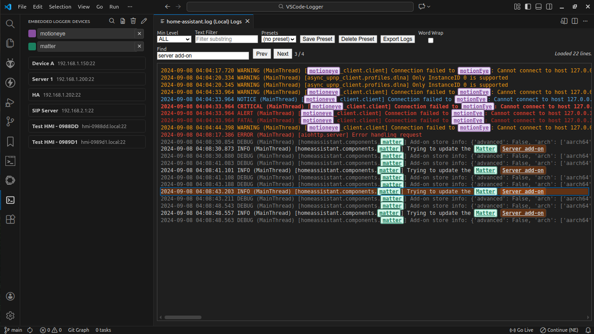
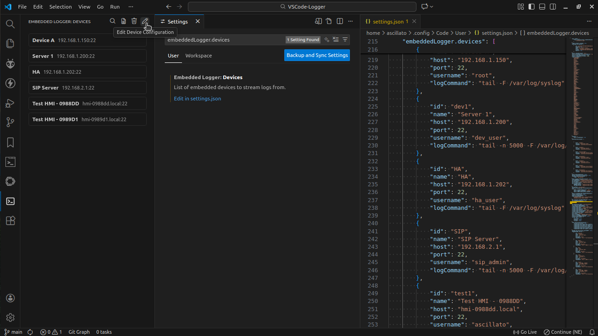
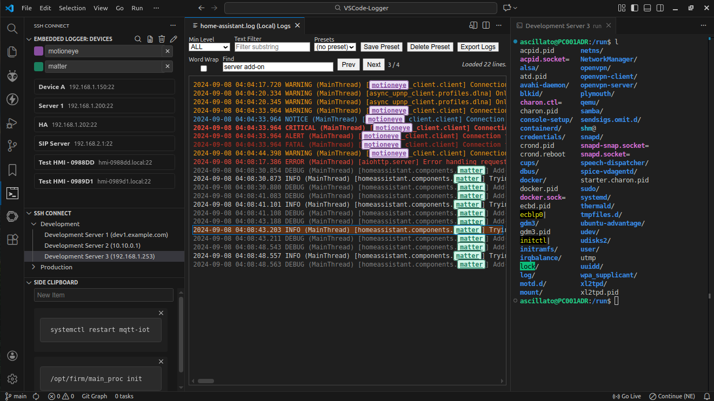

|
VSCode-Logger
Streaming embedded Linux logs inside VS Code
|
A Visual Studio Code extension that connects to embedded Linux devices over SSH, tails their logs, and displays them with loglevel colorization, filtering presets, custom keywords highlighting and filtered export.

tail -F /var/log/syslog).
Add devices in your VS Code settings under embeddedLogger.devices:
If no password is stored yet, the extension prompts for it when connecting and saves it locally and securely.
embeddedLogger.maxLinesPerTab (default: 100000). For auto-save, this limit is not applied to a file. Everything is saved.embeddedLogger.presets.<deviceId>.--- SSH session closed on <timestamp> and offers a Reconnect button next to the status text to restart streaming..log or .txt file from your machine. The chosen file is loaded into the log viewer so you can reuse filtering, presets, export filtered logs and highlights just like a live connection.tail -F /var/log/syslog. So, some messages like: ‘tail: ’/var/log/syslog' has appeared; following new filemay appear. This message in particular happens when the log file is rotated or recreated. The-Fflag tellstailto keep watching for the file to reappear, so the message is informational and indicates that log streaming will continue with the new file. If you prefer a different log source, update thelogCommand` in your device configuration.The Embedded Device Logger extension supports sharing the VSCode Activity Bar with other extensions. To merge an extension into the Activity Bar, simply select its icon from the Side Bar, then drag and drop it into your desired position within the Activity Bar.

In the example, the other extensions (from other publishers) are:
elcamilet.ssh-connectikoamu.side-clipboardFrom VSCode:
ext install Scallant.embedded-device-logger, and press enter.code --install-extension Scallant.embedded-device-loggerFor more information visit the Embedded Device Logger Extension in the VSCode Marketplace.
If you find this extension useful, please rate it.
npm install to install dependencies.npm run compile to build the TypeScript.F5 in VS Code to launch the extension development host and open the Embedded Logger view.npm install -g @vscode/vscevsce package to generate vsix file to be installed into VSCodecode --install-extension embedded-device-logger-0.7.0.vsixclear; rm -rf node_modules; rm -rf out; rm *.vsix; npm install; npm run compile; vsce packagecode --install-extension embedded-device-logger-0.7.0.vsixsudo apt-get install doxygen).doxygen Doxyfile to build the documentation into docs/html.docs/html/index.html in a browser to review the generated API reference.